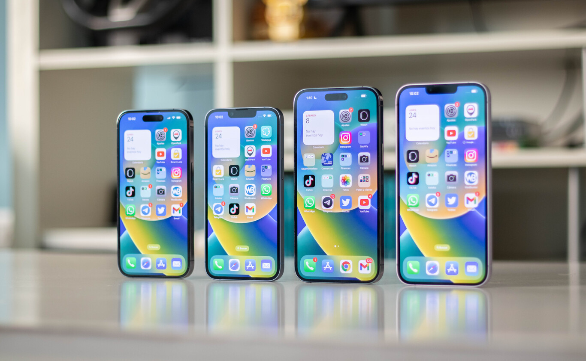

iPhone 14 vs 14 Plus vs 14 Pro vs 14 Pro Max, análisis frente a frente: cuál comprar entre los cuatro modelos  Apple ha cambiado ligeramente la estrategia con sus iPhone este año. Muere el mini, nace el iPhone 14 Plus, y los iPhone 14 Pro y 14 Pro Max son las claras estrellas respecto a unos iPhone 14 y 14 Plus que observan desde el banquillo. Este año hay más diferencias que nunca entre modelos, y hemos querido compararlos para que tengas claro cuál comprar. El grande o el pequeño, el Pro o el estándar. Ya te hacemos el pequeño spoiler de que este año es más fácil escoger, aunque puede que la respuesta a qué iPhone comprar en 2022 no sea la que esperamos. Veamos cuál es el actual escenario. iPhone 14 vs iPhone 14 Plus vs iPhone 14 Pro vs iPhone 14 Pro Max, ficha técnica Iphone 14 Iphone 14 Pro Iphone 14 Pro MAX Pantalla Super Retina XDR OLED de 6.1" Ratio 19, 5:9 HDR10 Super Retina XDR LTPO 1-120Hz OLED de 6,1" HDR10 Super Retina XDR LTPO 1-120Hz OLED de 6,7" HDR10 Procesador Apple A15 Bionic Apple A16 Bionic Apple A16 Bionic Conectividad y Sonido 5G, Gigabit LTE, Wifi6, Bluetooth 5.0 y NFC 5G, Gigabit LTE, Wifi6, Bluetooth 5.3 y NFC 5G, Gigabit LTE, Wifi6, Bluetooth 5.3 y NFC Cámara trasera 12 MP f/1.6, 12MP f/2.4 UGA 48MP f/1.5, 12MP f/1.8 UGA, 12 MP f/2.8 3x óptico 48MP f/1.5, 12MP f/1.8 UGA, 12 MP f/2.8 3x óptico Cámara frontal 12MP f/2.2 Batería 3279 mAh 3095 mAh 4352 mAh Precios 1009 € 1159 € 1469 € Los parecidos Este año se minimizan los parecidos entre los cuatro modelos, aunque sigue habiendo ciertas similitudes entre los miembros de la familia iPhone 14. Todos ellos tienen pantallas con tecnología OLED retina XDR, compatibles con HDR10 y una resolución ligeramente por encima del Full HD. Comparten también conectividad 5G, Face ID de última generación, resistencia al agua mediante protocolo IP68 y todos tienen una versión base que parte de 128 GB de almacenamiento interno. Comparten también versión de sistema operativo, como todos los iPhone medianamente recientes. Llegan con iOS 16 y prácticamente las mismas funciones, salvando algunas limitaciones como la Isla Dinámica y su integración en el sistema. Tampoco hay diferencia en la resolución en la cámara ultra gran angular trasera, donde se mantienen en 12 megapíxeles. Lo mismo sucede con la cámara delantera. Permanecen también sin cambios elementos como la ubicación de altavoces, botoneras de volumen y encendido o puertos de conexión. En lo demás, este año hay bastantes diferencias, tanto por diseño como por hardware. Diseño: dos pequeños, dos grandes Este año tan solo tenemos dos tamaños: 6,1 pulgadas en los iPhone 14 y 14 Pro, 6,7 pulgadas en el caso de los iPhone 14 Plus y 14 Pro Max. Empezando por los pequeños, hablamos de dos teléfonos bastante compactos, de menos de 15 centímetros de alto y de no demasiado grosor. Al igual que en las generaciones pasadas, los modelos Pro son de acero inoxidable y cristal, mientras que los modelos estándar tienen bordes de aluminio. El aumento de peso del modelo Pro lo convierte en un modelo muy pesado respecto al 14, que pesa 30 gramos menos (debido, principalmente, a los materiales de construcción). Los dos son indudablemente premium y, por más acero que tenga el Pro, que nos guste más uno u otro dependerá de las preferencias de cada uno. Más allá de materiales, es de agradecer que Apple mantenga las 6,1 pulgadas. Estos móviles son de los pocos gama alta "pequeños" que quedan en el mercado, siendo bastante cómodos ambos en mano, fáciles de transportar en el bolsillo, y sin renunciar por ello a specs de primera línea. En el lado de los modelos grandes tenemos los 14 Plus y 14 Pro Max. Son exactamente iguales que sus homólogos, con la diferencia de contar con 6,7 pulgadas y un peso bastante disparado. Hablamos de 206 gramos para el 14 Plus y 240 gramos para el Pro Max (casi el peso de un plegable). Estos móviles son enormes, no se pueden usar con una mano cómodamente y necesitaremos un buen bolsillo o bolso para transportarlos. Aquí destacar que se nota aún más la diferencia de peso entre modelos, que se dispara hasta los casi 40 gramos entre el Plus y el Pro Max. La otra gran diferencia de este año viene al darles la vuelta. La Isla Dinámica hace acto de presencia en los modelos Pro, mientras que los 14 siguen con el notch reducido de la generación anterior. Sobre la Isla hablaremos en el apartado de la pantalla. Indicar que esta es el mayor factor diferencial en diseño frontal, y el claro identificativo de que tenemos un modelo Pro. Pantalla: la Isla Dinámica y los Hz marcan la diferencia Sobre el papel, la pantalla de estos iPhone es similar. Todos tienen tecnología OLED retina XDR, pero la diferencia en brillo es abismal. En los modelos Pro tenemos, por primera vez en un teléfono, un pico máximo de brillo de 2.000 nits. En interiores y luz media no hay apenas diferencia pero, cuando salimos al exterior, los paneles son mundos distintos. La pantalla de los iPhone 14 Pro y 14 Pro Max es superlativa, visualizándose mucho mejor al sol respecto a sus hermanos mayores. Los iPhone 14 y 14 Plus se ven bastante bien, y es que su pico es de 800 nits en brillo exterior y 1.200 en contenido HDR. Pese al buen dato, el valor de brillo de los Pro es de más del doble, diferencia más que notable en cuanto aprieta el sol y queremos visualizar la pantalla sin menor problema. También siguen las diferencias entre el panel a 60 Hz constantes en los modelos 14 y 14 Plus, frente a los 120 Hz adaptativos que incluye el ProMotion de los modelos Pro. Esta tasa de refresco adaptativa cambia bastante la experiencia. En mi caso, uso el 14 Pro como móvil personal y lo primero que he notado al usar el 14 es lo mal que parece funcionar a su lado. 60 Hz no son aceptables en gama alta en pleno 2022, y aquí los modelos 14 tienen un serio problema frente a la competencia. La otra gran diferencia en pantalla tiene que ver con la Isla Dinámica, una conjunción entre hardware y software. El notch es un mal necesario si queremos tener un sistema de reconocimiento facial, y Apple ha querido integrarlo dentro del software para que sea un elemento más del UI, y no solo esa cosa molesta que tenemos encima de la pantalla. La Isla Dinámica es una genial idea, lejos de ser perfecta al ocupar más espacio que el propio notch, pero con un enorme potencial. Recomiendo leer la review en profundidad del iPhone 14 Pro de mi compañera Amparo Babiloni, donde se profundiza sobre el funcionamiento de la isla. En resumidas cuentas, esta sirve como un centro informativo de las aplicaciones que están corriendo en nuestro teléfono. Del mismo modo, destacar que las apps ya se están actualizando para integrarla mejor, y que cada vez encontramos interfaces más adaptadas a la Isla. Podemos interactuar con el reproductor de música, obtener indicaciones de Apple Maps, pronto podremos consultar resultados deportivos en tiempo real con iOS 16.1... El potencial de la Isla es enorme, aunque no marca una diferencia significativa respecto a no tenerla. ¿Qué iPhone 14 Pro me compro? La mejor compra este año es un iPhone de generación pasada a menor precio, como contamos tras el lanzamiento de los mismos. Si queremos sí o sí un modelo de última generación, el iPhone 14 Pro es la compra más equilibrada si queremos un móvil compacto y con lo mejor de lo mejor punto por punto. El Pro Max tan solo lo recomendaría a los usuarios que quieran un móvil enorme. En cualquiera de los dos casos, estaremos comprando dos de las mejores piezas tecnológicas del mercado, sobresalientes punto por punto, y prácticamente imbatibles en pantalla, rendimiento y soporte durante seis años. ProRAW es otra de las grandes razones de peso. En automático el rendimiento no cambia mucho respecto al año pasado pero, si nos gusta exprimir la cámara, este modo es una delicia. Respecto a los iPhone 14, me resulta bastante díficil recomendar su compra. No tienen apenas cambios respecto a los modelos del año pasado, repiten procesador y no hay un salto notable en cámara. Tan solo recomendaría estos dos modelos si venimos de un iPhone bastante antiguo y no estamos dispuestos a gastar los más de 1.300 y 1.400 euros que cuestan los modelos Pro. Aquí, insisto en que un iPhone 13 es mejor compra que un 14, dado el mismo procesador y las pocas mejoras de la cámara en automático.